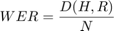

WORD ERROR RATE
Word error rate (WER) is a measure (metric) of the performance of an automatic speech recognition, machine translation etc.
Contents
Description
The function is intended for calculation of WER between word sequence H (hypothesis) and word sequence R (reference).
For calculation we use Levenshtein distance on word level. Levenshtein distance is a minimal quantity of insertions, deletions and substitutions of words for conversion of a hypothesis to a reference.

where D(H,R) is a Levenshtein distance between H and R, and N is the number of words in the reference R. H and R are cell arrays of words (for example after using TEXTSCAN) or cells with word sequences or strings. Types of H and R may be different.
Usage
W = WER(H,R) returns array W.
- W(1) is WER for case sensitive.
- W(2) is WER for case insensitive.
W = WER(H,R,1) and both H and R are strings then we calculate distances on character level and result is the character error rate (CHR).
Examples
- 1. Cell arrays of words
h=[{'The'},{'carpenter'},{'said'},{'that'},{'average'},{'well'},...
{'is'},{'concealing'},{'a'},{'lot'},{'of'},{'variance'}];
r=[{'Then'},{'Carpenter'},{'said'},{'that'},{'average'},{'value'},...
{'is'},{'concealing'},{'a'},{'lot'},{'of'},{'variances'}];
w=WER(h,r);
disp('WER, case sensitive');disp(w(1))
disp('WER, case insensitive');disp(w(2))
WER, case sensitive
0.33333
WER, case insensitive
0.25
- 2. Cells with word sequences
h={'The','English','word','probability','derives',...
'from','Latin','word','probitas'};
r={'The','English','word','Probability','derives',...
'from','the','Latinic','word','Probabilitas'};
w=WER(h,r);
disp('WER, case sensitive');disp(w(1))
disp('WER, case insensitive');disp(w(2))
WER, case sensitive
0.4
WER, case insensitive
0.3
- 3. Strings
h='Mathworks connection programs'; r='MathWorks Connections Program'; w=WER(h,r); disp('WER, case sensitive');disp(w(1)) disp('WER, case insensitive');disp(w(2)) w=WER(h,r,1); disp('CHR, case sensitive');disp(w(1)) disp('CHR, case insensitive');disp(w(2))
WER, case sensitive
1
WER, case insensitive
0.66667
CHR, case sensitive
0.17241
CHR, case insensitive
0.068966